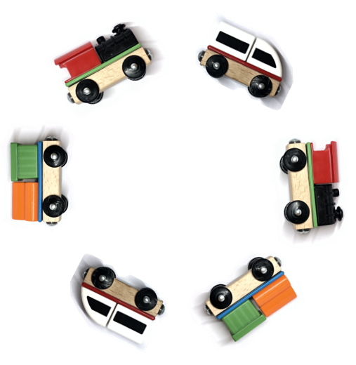
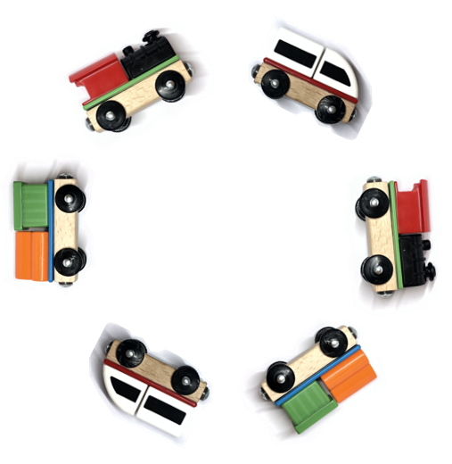

CHOO-CHOO STOOL
 

打破童话与现实之间的界限，将玩具世界与真实的世界联系起来——凳面的旋转即等同于小火车在轨道中奔跑，希望以此表达“永远保持孩童般好奇心”的黑客精神。凳面和火车轨道由透明亚克力制成，中心轴承连接。小火车与凳面非完全固定，有相互追逐的趣味。
Choo-choo stool breaks the boundary of fairytale and reality. It creates relevance between the toy world and the real world: the swiveling of the stool means the movement of toy trains. It expresses my hacker spirit: to always maintain curiosity like a child. Acrylic and a bearing are used. The toy trains are not totally stuck to the seat surface and can chase one another.